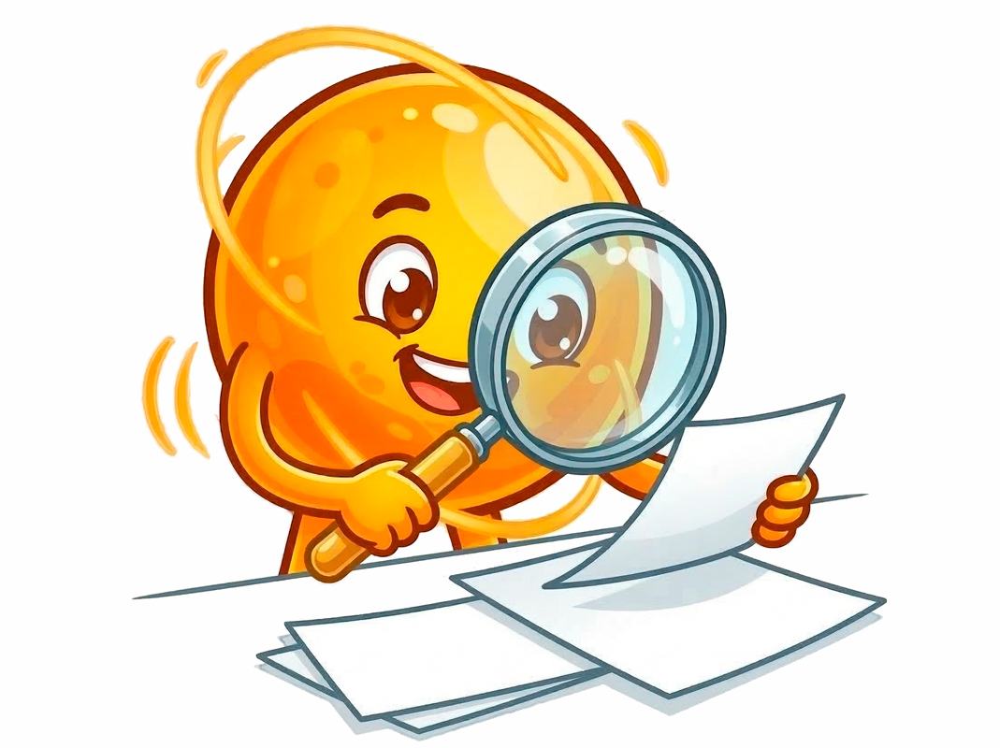
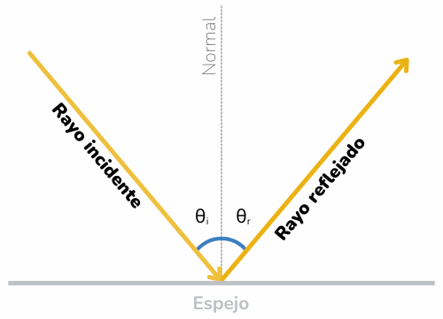
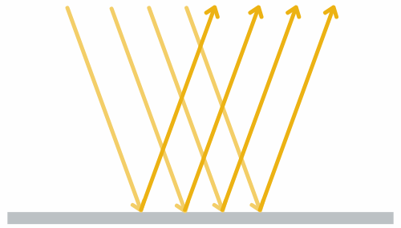
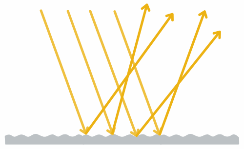

🔍 Descubriendo la reflexión
En el experimento anterior observaste que el rayo de luz cambia de dirección al incidir sobre el espejo. Ahora vamos a analizar este fenómeno con mayor detalle.
Para ello utilizaremos una simulación interactiva en GeoGebra. Esta herramienta nos permitirá visualizar con mayor claridad el recorrido de la luz: desde que sale del puntero, llega al espejo y luego continúa su trayectoria hasta la diana.
🧭 Explora la simulación
Enciende el puntero láser y muévelo libremente dentro de la simulación.
👀 ¿El recorrido del rayo coincide con lo que imaginaste después de realizar el experimento?
https://www.geogebra.org/m/gwum5hqy (Ventana nueva)
Fuente: Simulación adaptada de Sue Popelka mediante GeoGebra.
Fíjate en estos tres componentes importantes:
|
Rayo de entrada: El rayo que viaja desde el láser hacia el punto donde la luz llega al espejo. Rayo de salida: El rayo que continúa su trayectoria después de tocar el espejo y se dirige hacia la diana. Línea de referencia (normal): La línea punteada que sale de forma perpendicular al espejo. |
Mientras mueves el láser, observa con atención: ¿Qué ocurre con los ángulos que forman los rayos con respecto a la línea de referencia?
📊 Registro de datos
Ahora vamos a buscar la relación que parece seguir la luz en esta situación. Sigue estos pasos y completa la tabla:
|
Paso 1. Mueve el puntero hasta que el rayo que sale del espejo llegue al centro de la diana. Paso 2. Observa los valores de los ángulos que aparecen en la simulación: el ángulo del rayo que llega al espejo y el ángulo del rayo que sale de él, medidos respecto a la línea de referencia. Regístralos en la tabla. Paso 3. Cambia la posición del láser a dos lugares diferentes y repite el procedimiento para obtener nuevos valores. |
| Intento | Ángulo del rayo que llega al espejo (E) | Ángulo del rayo que sale del espejo (S) |
| 1 | ||
| 2 | ||
| 3 |
Analicemos los resultados

Observa los valores que registraste y responde:
- ¿Qué relación encuentras entre los dos ángulos?
- Cuando cambias la posición del láser, esa relación se mantiene?
- ¿Crees que esta relación cambiaría si usáramos una superficie arrugada como el papel aluminio?
- ¿Cómo podrías expresar esa relación con una frase clara?
💡 Lo que descubrimos sobre la luz
En el experimento y en la simulación observaste algo interesante: cuando el rayo de luz llega al espejo cambia de dirección, pero no lo hace de forma aleatoria. Existe una relación clara entre el rayo que llega a la superficie y el que se aleja de ella. A este fenómeno se le llama reflexión de la luz.
|
📝 Reflexión de la luz Es el fenómeno óptico que ocurre cuando un rayo de luz incide sobre una superficie y cambia de dirección, permaneciendo en el mismo medio de propagación. |
Para describir con mayor precisión lo que ocurre, es necesario identificar algunos elementos importantes:
- Rayo incidente (i): es el rayo de luz que llega a la superficie (en este caso, el que sale del puntero láser).
- Rayo reflejado (r): es el rayo que se aleja de la superficie después de incidir en ella (el que se dirige hacia la diana).
- La normal (N): es una línea imaginaria perpendicular a la superficie en el punto donde llega el rayo de luz. Esta línea sirve como referencia para medir los ángulos.
- Ángulos (θi y θr): son las aberturas que se forman entre los rayos de luz y la línea normal.
Al comparar los valores registrados en la simulación, probablemente notaste algo importante: los ángulos que forman el rayo que llega al espejo y el rayo que se aleja de él siempre tienen el mismo valor. A partir de esta observación se enuncia una regla fundamental de la óptica, conocida como Ley de la Reflexión.
|
📝 Ley de la reflexión El ángulo de incidencia es igual al ángulo de reflexión: θi = θr |
Esto significa que la luz se refleja formando el mismo ángulo con respecto a la normal con el que llega al espejo.

Ahora bien, si esta ley siempre se cumple, surge una pregunta interesante: ¿por qué no todos los objetos reflejan la luz como lo hace un espejo? 🤔
La respuesta está en cómo es la superficie donde incide la luz.
Cuando la superficie es lisa y pulida, como en un espejo, los rayos de luz se reflejan de forma ordenada y mantienen una dirección definida. A este tipo de reflexión se le conoce como reflexión especular, y es la que permite que se formen imágenes nítidas.

En cambio, cuando la superficie es rugosa o irregular, incluso a escala microscópica, los rayos de luz se reflejan en muchas direcciones diferentes. Este fenómeno se denomina reflexión difusa. En este caso no se forma una imagen clara, pero gracias a esta dispersión de la luz podemos ver los objetos desde distintos ángulos.

🔎 Un dato interesanteAunque los espejos producen imágenes claras, en realidad la reflexión difusa es la más importante en nuestra vida cotidiana. Gracias a ella la luz se refleja en paredes, objetos y personas, permitiéndonos verlos desde diferentes ángulos. |